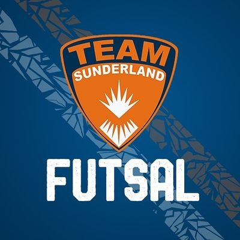
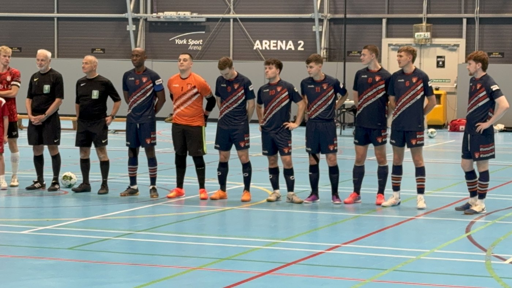
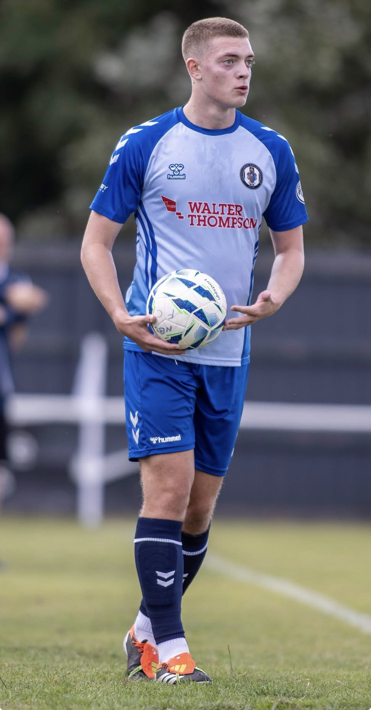
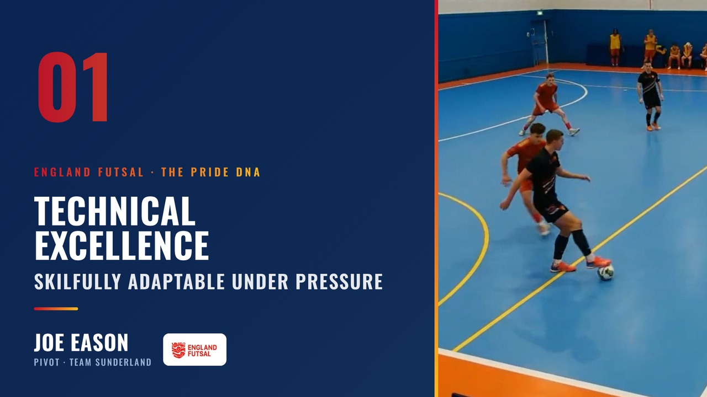
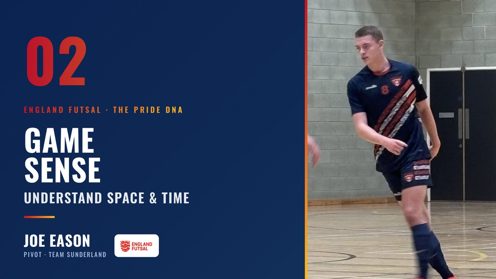
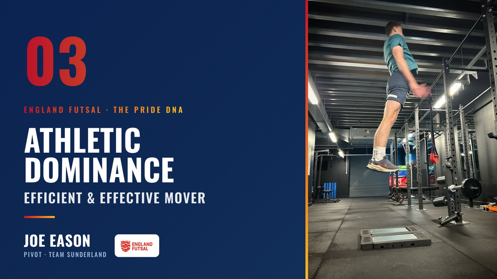
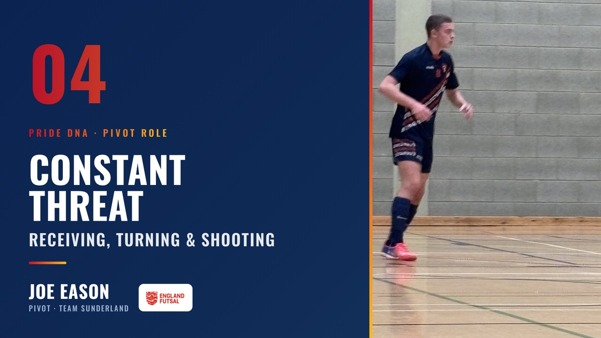
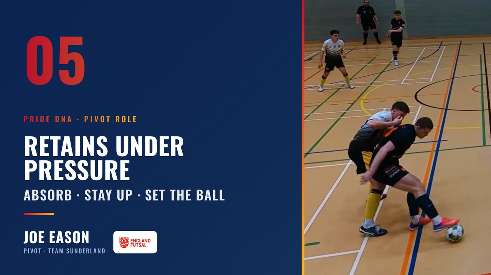
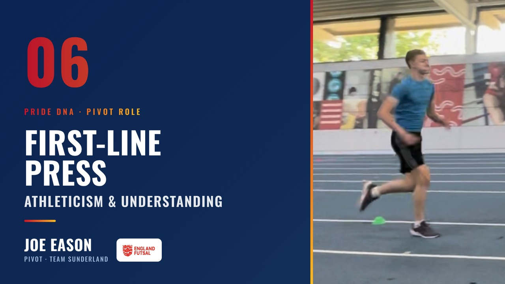

England Futsal Men’s Under-23 Pathway · Team Sunderland Joe is in the England Futsal Men’s U23 pathway He plays pivot for Team Sunderland in the National Futsal Series. His full futsal case — measured against England Futsal’s Pride DNA — has its own site. Visit joeeasonfutsal.com
Futsal is the most useful training environment a midfielder can have outside of the eleven-a-side game. Smaller pitch, harder ball, four outfielders, no walls to bail you out. Every touch matters, every decision is under pressure, every duel is physical.
Joe plays as the pivot — the team's furthest-forward player, working with his back to goal. The position rewards exactly the attributes scouts have flagged repeatedly in his football game: physical strength, composure on the half-turn, and two-footed technique. It also demands intelligent positional rotation in possession, and discipline as the team's first line of defence — closing off passing lanes from the front so the structure behind him holds.
What England Futsal asks of a pivot
England Futsal builds every player on the Pride DNA — four pillars in one house: Emotional Intelligence at the roof, Game Sense and Technical Excellence as the walls, Athletic Dominance as the foundation. It then sets role-specific attributes for the pivot: a constant threat, retaining the ball under pressure, and leading the press from the front.
The Complete 8, on a smaller court
At 6'2" and 85kg with an IMTP of 3.7× bodyweight, Joe wins the physical duels that decide futsal pivot play. The shielding, the back-foot receiving, the strength to roll a defender — all flagged in scout reports from his eleven-a-side game — are exactly what the role needs. The difference is the space and the time: futsal compresses both, so the margins are tighter and the contact harder.
In eleven-a-side, Joe’s game is built as The Complete 8 — the 6 into the 8, the bit you can’t coach, and the end product of the 10. The Pride DNA asks for the same player on a smaller court:
What scouts have said about his football game maps directly onto his futsal:
"Receive on back foot well, hold off man, head up to know where to play early or utilises his strength to roll man and play forward."
David Banjura, Former National League Chief Scout
That description IS the pivot role. Same evidence, second sport.

The Pivot · six competency videos
One short video for each part of the Pride DNA that can be filmed, in the same order as the playlist on YouTube. The full competency-by-competency analysis lives on joeeasonfutsal.com.

Technical Excellence
Skilfully adaptable under pressure.

Game Sense
Understand space & time.

Athletic Dominance
Efficient and effective mover.

Constant Threat
Receiving, turning & shooting in the final third.

Retains Under Pressure
Effectively retains possession under pressure.

First-Line Press
Athleticism & understanding to press effectively at the first line.